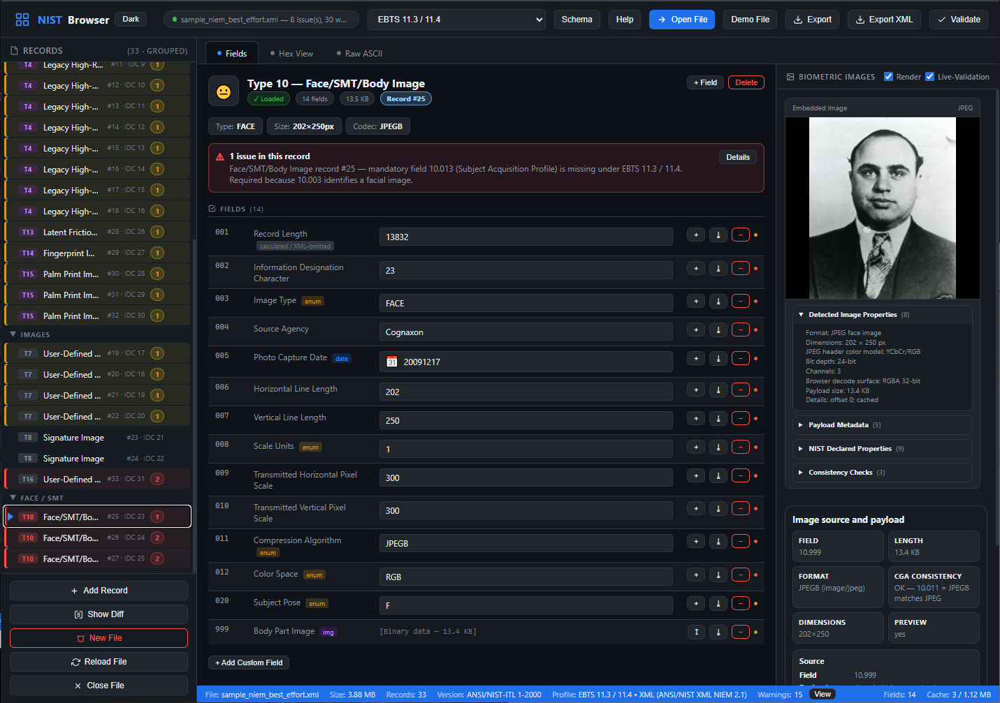
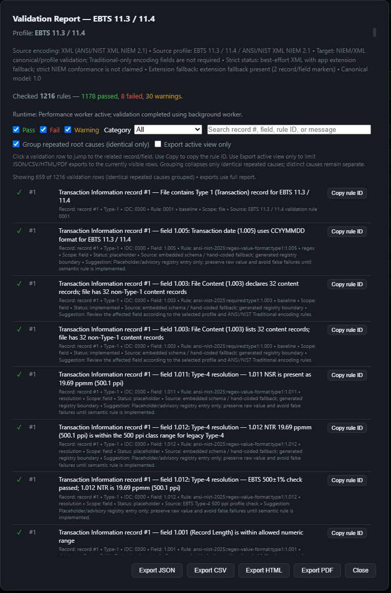
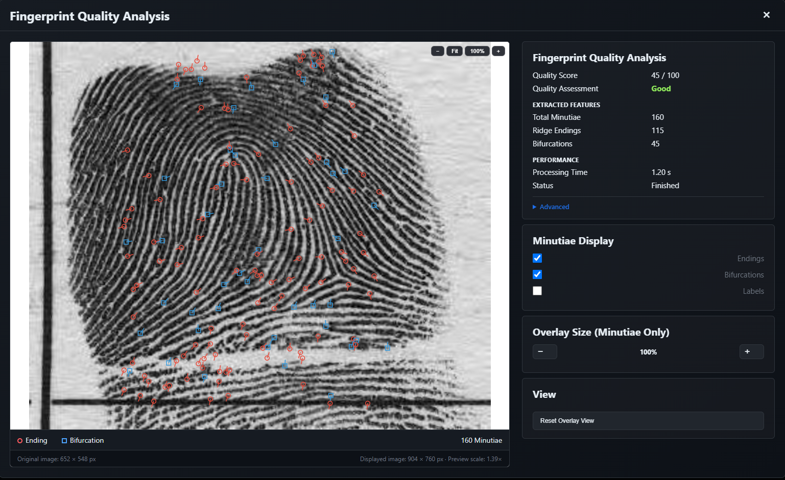

Explore and edit
Navigate records, fields, subfields and items. Use structured, Raw ASCII and Hex views while preserving supported binary payloads.
Understand every byte of your biometric transactions. Inspect, edit, validate, compare and analyze ANSI/NIST-ITL files in one application, designed for developers, forensic laboratories, researchers and biometric system integrators.
Free for personal, professional, governmental and commercial use. No license fees. No subscriptions. No cloud processing requirement.

Investigate rejected transactions, troubleshoot interoperability and inspect both the logical content and original binary representation of biometric records.
Navigate records, fields, subfields and items. Use structured, Raw ASCII and Hex views while preserving supported binary payloads.
Identify structural, field-value, profile, compression, resolution and cross-record consistency issues.
Understand logical changes and subtle byte-level differences in field formatting, encodings and separators.
Import, export and convert supported Traditional ANSI/NIST and XML representations.
Preview and inspect WSQ, JPEG, JPEG 2000, PNG, TIFF, DICOM and other supported image formats.
Use integrated NFIQ2 analysis with quality scores, minutiae statistics and image overlays for suitable fingerprints.
From investigating rejected files to developing biometric integrations, NIST Editor helps you inspect record content, understand structural issues and troubleshoot interoperability using supported standards and profiles.


Assess suitable fingerprint images locally, inspect minutiae and other diagnostics, and visualize analysis results over the decoded fingerprint used for processing.
Supported editing, decoding, validation, conversion and quality analysis take place on your computer. No cloud upload or online processing is required for these functions.
Use NIST Editor for personal projects, research, education, software development, commercial integration, forensic examination and government operations. No commercial license purchase, subscription or donation is required.
NIST Editor is independently developed, copyright-protected software. Its license permits free use but restricts unauthorized redistribution, resale and sublicensing. Full terms are available in the application under About → Software License.
Voluntary donations help support continued improvements, but they never affect your right to use the software.
Get the latest Windows release and start exploring biometric transactions. Free for personal and commercial use; no registration or commercial-use license required.